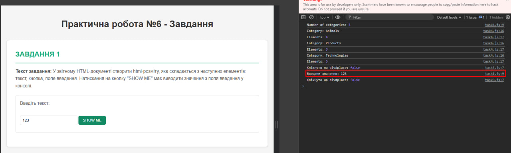
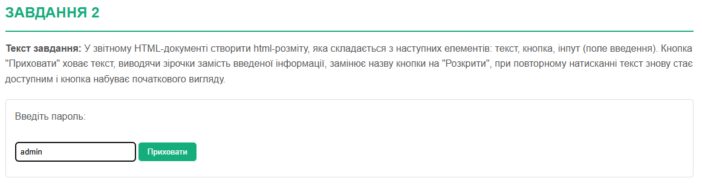
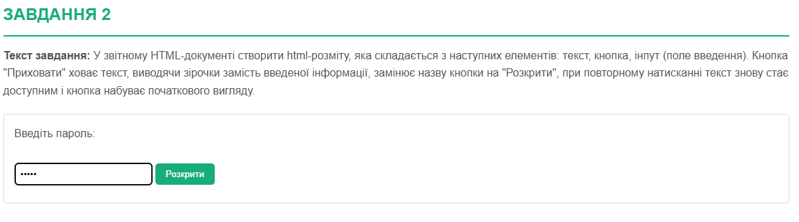
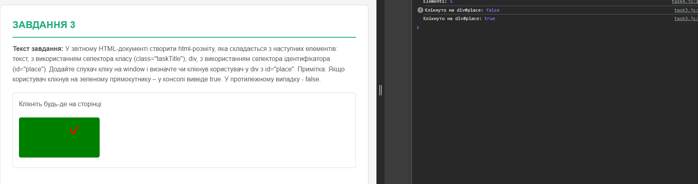
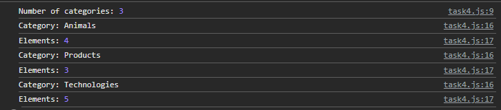
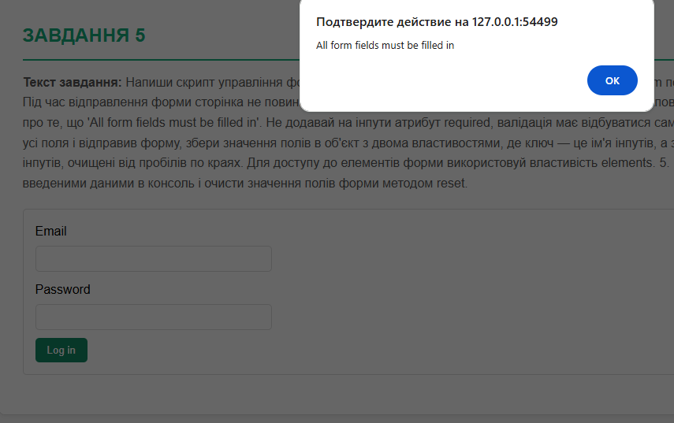
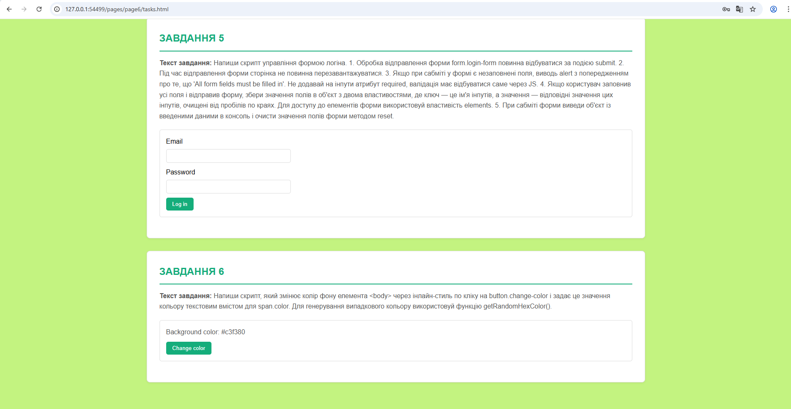

Тема: «Прототипи. Класи. Об'єктна модель документа (DOM). Події. Об'єкт події. Делегування подій.»
Мета: Придбати практичні навички роботи з DOM, обробкою подій, делегуванням подій у JavaScript та реалізацією інтерактивних елементів веб-сторінки.
Опис: У власному WEB-застосунку створено програмний код делегування подій: при виборі елемента в колекції елементів відкривається модальне вікно. Використано DOMContentLoaded для правильного завантаження скрипту після завантаження DOM.
document.addEventListener('DOMContentLoaded', function() {
// Елементи модального вікна
let modal = document.getElementById('modal');
let modalContent = document.getElementById('modal-content');
// Створення модального вікна, якщо воно не існує (для демонстрації)
if (!modal) {
modal = document.createElement('div');
modal.id = 'modal';
modal.style.cssText = 'display: none; position: fixed; z-index: 1000; left: 0; top: 0; width: 100%; height: 100%; overflow: auto; background-color: rgba(0,0,0,0.5); justify-content: center; align-items: center;';
modalContent = document.createElement('div');
modalContent.id = 'modal-content';
modalContent.style.cssText = 'background-color: #fff; padding: 25px; border-radius: 10px; width: 90%; max-width: 500px; position: relative; box-shadow: 0 4px 6px rgba(0,0,0,0.1); font-family: Arial, sans-serif;';
modal.appendChild(modalContent);
document.body.appendChild(modal);
}
// Делегування подій на document
document.addEventListener('click', function(event) {
// Шукаємо клік по картці або її нащадках
const itemCard = event.target.closest('.item-card');
if (itemCard) {
// Збір даних
const title = itemCard.dataset.title || itemCard.querySelector('.item-title').innerText;
const description = itemCard.dataset.description || itemCard.querySelector('.item-description').innerText;
const price = itemCard.dataset.price || '';
// Формування контенту
const priceHtml = price ? '<p style="font-weight: bold; color: #15ad7b; margin-top: 10px;">Ціна: ' + price + '</p>' : '';
modalContent.innerHTML =
'<h2 style="margin-top: 0; color: #333;">' + title + '</h2>' +
'<p style="color: #666; line-height: 1.5;">' + description + '</p>' +
priceHtml +
'<button class="modal-close" style="margin-top: 20px; padding: 10px 20px; background-color: #15ad7b; color: white; border: none; border-radius: 5px; cursor: pointer; font-size: 14px;">Закрити</button>';
modal.style.display = 'flex';
}
// Закриття вікна
else if (event.target === modal || event.target.classList.contains('modal-close')) {
modal.style.display = 'none';
}
});
});| Дія | Результат |
|---|---|
| Клік на картку товару | Відкривається модальне вікно |
| Клік на кнопку "Закрити" | Модальне вікно зникає |
Демонстрація:
Для перегляду робочої демонстрації делегування подій перейдіть на окрему сторінку:
Відкрити демонстраціюТекст завдання: У звітному HTML-документі створити html-розміту, яка складається з наступних елементів: текст, кнопка, поле введення. Натискання на кнопку "SHOW ME" має виводити значення з поля введення у консолі.
// Завдання 1: Виведення значення з поля введення у консоль
document.addEventListener('DOMContentLoaded', function() {
const showButton = document.getElementById('show-btn');
const inputField = document.getElementById('input-field');
if (showButton && inputField) {
showButton.addEventListener('click', function() {
const value = inputField.value;
console.log('Введене значення:', value);
});
}
});<div>
<p>Введіть текст:</p>
<input type="text" id="input-field" placeholder="Введіть значення">
<button id="show-btn">SHOW ME</button>
</div>| Введене значення | Вивід у консоль |
|---|---|
| "Hello World" | Введене значення: Hello World |
| "12345" | Введене значення: 12345 |
| "" (порожнє) | Введене значення: |
Демонстрація:
Текст завдання: У звітному HTML-документі створити html-розміту, яка складається з наступних елементів: текст, кнопка, інпут (поле введення). Кнопка "Приховати" ховає текст, виводячи зірочки замість введеної інформації, замінює назву кнопки на "Розкрити", при повторному натисканні текст знову стає доступним і кнопка набуває початкового вигляду.
// Завдання 2: Приховування/розкриття тексту
document.addEventListener('DOMContentLoaded', function() {
const toggleButton = document.getElementById('toggle-btn');
const inputField = document.getElementById('password-input');
let isHidden = false;
if (toggleButton && inputField) {
toggleButton.addEventListener('click', function() {
if (isHidden) {
// Розкриваємо текст
inputField.type = 'text';
toggleButton.textContent = 'Приховати';
isHidden = false;
} else {
// Приховуємо текст
inputField.type = 'password';
toggleButton.textContent = 'Розкрити';
isHidden = true;
}
});
}
});<div>
<p>Введіть пароль:</p>
<input type="text" id="password-input" placeholder="Введіть пароль">
<button id="toggle-btn">Приховати</button>
</div>| Стан | Тип поля | Текст кнопки |
|---|---|---|
| Початковий | text (видимий) | Приховати |
| Після натискання | password (зірочки) | Розкрити |
| Після повторного натискання | text (видимий) | Приховати |
Демонстрація:
 Текст завдання: У звітному HTML-документі створити html-розміту, яка складається з наступних елементів: текст, з використанням селектора класу (class="taskTitle"), div, з використанням селектора ідентифікатора (id="place"). Додайте слухач кліку на window і визначте чи клікнув користувач у div з id="place". Примітка: Якщо користувач клікнув на зеленому прямокутнику – у консолі виведе true. У протилежному випадку - false.
// Завдання 3: Визначення кліку на div з id="place"
document.addEventListener('DOMContentLoaded', function() {
const placeDiv = document.getElementById('place');
window.addEventListener('click', function(event) {
const clickedOnPlace = event.target === placeDiv || placeDiv.contains(event.target);
console.log('Клікнуто на div#place:', clickedOnPlace);
});
});<p class="taskTitle">Клікніть будь-де на сторінці</p>
<div id="place" style="width: 200px; height: 100px; background-color: green;"></div>| Місце кліку | Вивід у консоль |
|---|---|
| Клік на зеленому div#place | Клікнуто на div#place: true |
| Клік поза div#place | Клікнуто на div#place: false |
Демонстрація:
Текст завдання: HTML містить список категорій ul#categories. Напиши скрипт, який: 1. Порахує і виведе в консоль кількість категорій в ul#categories, тобто елементів li.item. 2. Для кожного элемента li.item у списку ul#categories, знайде і виведе в консоль текст заголовку елемента (тегу <h2>) і кількість елементів в категорії (усіх <li>, вкладених в нього). Для виконання цього завдання потрібно використати метод forEach() і властивості навігації по DOM.
// Завдання 4: Підрахунок категорій та елементів
document.addEventListener('DOMContentLoaded', function() {
const categoriesList = document.getElementById('categories');
if (categoriesList) {
const categories = categoriesList.querySelectorAll('li.item');
const numberOfCategories = categories.length;
console.log('Number of categories:', numberOfCategories);
categories.forEach(category => {
const title = category.querySelector('h2').textContent;
const items = category.querySelectorAll('li');
const numberOfItems = items.length;
console.log('Category:', title);
console.log('Elements:', numberOfItems);
});
}
});<ul id="categories">
<li class="item">
<h2>Animals</h2>
<ul>
<li>Cat</li>
<li>Hamster</li>
<li>Horse</li>
<li>Parrot</li>
</ul>
</li>
<li class="item">
<h2>Products</h2>
<ul>
<li>Bread</li>
<li>Prasley</li>
<li>Cheese</li>
</ul>
</li>
<li class="item">
<h2>Technologies</h2>
<ul>
<li>HTML</li>
<li>CSS</li>
<li>JavaScript</li>
<li>React</li>
<li>Node.js</li>
</ul>
</li>
</ul>| Вивід у консоль |
|---|
| Number of categories: 3 Category: Animals Elements: 4 Category: Products Elements: 3 Category: Technologies Elements: 5 |
Демонстрація:
Текст завдання: Напиши скрипт управління формою логіна. 1. Обробка відправлення форми form.login-form повинна відбуватися за подією submit. 2. Під час відправлення форми сторінка не повинна перезавантажуватися. 3. Якщо при сабміті у формі є незаповнені поля, виводь alert з попередженням про те, що 'All form fields must be filled in'. Не додавай на інпути атрибут required, валідація має відбуватися саме через JS. 4. Якщо користувач заповнив усі поля і відправив форму, збери значення полів в об'єкт з двома властивостями, де ключ — це ім'я інпутів, а значення — відповідні значення цих інпутів, очищені від пробілів по краях. Для доступу до елементів форми використовуй властивість elements. 5. При сабміті форми виведи об'єкт із введеними даними в консоль і очисти значення полів форми методом reset.
// Завдання 5: Управління формою логіна
document.addEventListener('DOMContentLoaded', function() {
const loginForm = document.querySelector('.login-form');
if (loginForm) {
loginForm.addEventListener('submit', function(event) {
event.preventDefault();
const formData = new FormData(loginForm);
const email = formData.get('email')?.trim();
const password = formData.get('password')?.trim();
if (!email || !password) {
alert('All form fields must be filled in');
return;
}
const userData = {
email: email,
password: password
};
console.log('User data:', userData);
loginForm.reset();
});
}
});<form class="login-form">
<label>
Email
<input type="email" name="email" />
</label>
<label>
Password
<input type="password" name="password" />
</label>
<button type="submit">Log in</button>
</form>| Введені дані | Результат |
|---|---|
| Email: "", Password: "" | Alert: "All form fields must be filled in" |
| Email: "user@example.com", Password: "password123" | Console: { email: "user@example.com", password: "password123" } Форма очищена |
Демонстрація:
Текст завдання: Напиши скрипт, який змінює колір фону елемента <body> через інлайн-стиль по кліку на button.change-color і задає це значення кольору текстовим вмістом для span.color. Для генерування випадкового кольору використовуй функцію getRandomHexColor().
// Завдання 6: Зміна кольору фону body
function getRandomHexColor() {
return `#${Math.floor(Math.random() * 16777215)
.toString(16)
.padStart(6, 0)}`;
}
document.addEventListener('DOMContentLoaded', function() {
const changeColorButton = document.querySelector('.change-color');
const colorSpan = document.querySelector('.color');
if (changeColorButton && colorSpan) {
changeColorButton.addEventListener('click', function() {
const randomColor = getRandomHexColor();
document.body.style.backgroundColor = randomColor;
colorSpan.textContent = randomColor;
});
}
});<div class="widget">
<p>Background color: <span class="color">-</span></p>
<button type="button" class="change-color">Change color</button>
</div>| Дія | Результат |
|---|---|
| Клік на кнопку "Change color" | Фон body змінюється на випадковий колір span.color відображає hex-значення (наприклад: #a3f2d1) |
Демонстрація:
У ході лабораторної роботи було ґрунтовно опрацьовано механізми взаємодії JavaScript із структурою веб-сторінки, зосередивши увагу на Document Object Model (DOM) та обробці подій. Були закріплені практичні навички навігації та маніпуляції DOM-деревом для отримання інформації про структуру та динамічної зміни стилів елементів. Ключовим досягненням стала реалізація ефективних обробників подій, зокрема застосування делегування подій для оптимізованої роботи з великою кількістю або динамічно доданими елементами. Додатково було реалізовано важливі функції, такі як валідація даних форм безпосередньо через JavaScript, що забезпечує створення надійних та високоінтерактивних елементів веб-сторінки, необхідних для розробки сучасних динамічних застосунків.